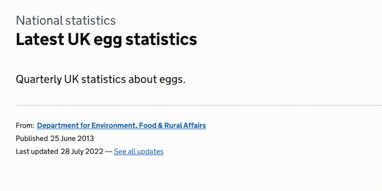

install.packages("remotes") # if not yet installed
remotes::install_github("co-analysis/a11ytables")
library(a11ytables)
tl;dr
I presented some slides at the EARL 2022 conference about {a11ytables}: an R package that helps automate the production of reproducible and accessible spreadsheets, with a focus on publication of government statistics.
Counting sheets
The UK government publishes a lot of spreadsheets that contain statistical tables. Compared to each other—and to themselves over time—these files are often:
- inconsistent in structure (e.g. cover or contents sheets are missing)
- inconsistent in style (e.g. different fonts, different shorthand codes for suppressed values)
- inaccessible to users of assistive technology (e.g. they contain blank columns or unannounced footnotes)
Luckily, the government’s Analysis Function released some excellent guidance for releasing statistics in spreadsheets, with particular attention to accessibility.
The government’s grassroots Reproducible Analytical Pipelines (RAP) movement is also growing at pace. RAP’s purpose is to overcome a legacy of fragmented point-and-click processes into code-driven end-to-end pipelines that improve speed, accuracy and reproducibility; including workflows that generate statistical spreadsheets for publication.
It will take time for these approaches to become 100% embedded across government, due to factors like the inevitable inertia that comes with trying to leave legacy processes behind.1
How can we grease the wheels?
Easy does it
A major aim of {a11ytables} is to make it easy for stats producers to more easily complete the last mile of their ‘data-in to spreadsheet-out’ pipeline. As such, the workflow is relatively simple and is composed of only three functions (arguments ignored for brevity):
create_a11ytable() |>
generate_workbook() |>
openxlsx::saveWorkbook()Basically:
- Pass information and data as arguments to
create_a11ytable(), which creates a special a11ytables-class dataframe representation of your spreadsheet content - Pass that object to
generate_workbook()to convert it to a Workbook-class object that applies the required structure and styling - Use
saveWorkbook()from the {openxlsx} package to write the spreadsheet output to an xlsx file
I recommend that you read the vignettes and function documentation on the package website to better understand how to use {a11ytables} and to learn about its caveats3; I won’t go into depth in this post.
Over-easy does it
I wrote some slides about the package and presented it at the EARL 2022 conference4 in London. Yes, to expose the package, but also to make a wider point about the general importance of reproducibility, accessibility and the power of reusable tools.
You can access the slides for my talk on the web, or find the source on GitHub.
The slides show an example of some tables published by the UK government—the latest UK egg statistics5—and walks through how they might be developed using {a11ytables}.
I wrote the slides in Quarto and made heavy use of {quartostamp}—my package of Quarto helpers exposed as an RStudio Addin—which I wrote about recently. Click ‘settings’ in the hamburger menu (lower left) to go fullscreen, see presenter notes, or get a slide overview.
Environment
Session info
Last rendered: 2023-07-06 19:27:04 BSTR version 4.3.1 (2023-06-16)
Platform: aarch64-apple-darwin20 (64-bit)
Running under: macOS Ventura 13.2.1
Matrix products: default
BLAS: /Library/Frameworks/R.framework/Versions/4.3-arm64/Resources/lib/libRblas.0.dylib
LAPACK: /Library/Frameworks/R.framework/Versions/4.3-arm64/Resources/lib/libRlapack.dylib; LAPACK version 3.11.0
locale:
[1] en_US.UTF-8/en_US.UTF-8/en_US.UTF-8/C/en_US.UTF-8/en_US.UTF-8
time zone: Europe/London
tzcode source: internal
attached base packages:
[1] stats graphics grDevices utils datasets methods base
loaded via a namespace (and not attached):
[1] htmlwidgets_1.6.2 compiler_4.3.1 fastmap_1.1.1
[4] cli_3.6.1 tools_4.3.1 htmltools_0.5.5
[7] xaringanExtra_0.7.0 rstudioapi_0.14 yaml_2.3.7
[10] rmarkdown_2.23 knitr_1.43.1 jsonlite_1.8.7
[13] xfun_0.39 digest_0.6.31 rlang_1.1.1
[16] evaluate_0.21 Footnotes
Check out the excellent RAP strategy and Goldacre Review for how this might be achieved.↩︎
This blog and everything on it is personal and doesn’t represent government policy in any possible shape or form. Unless the Geospatial Commission needs me for drawing procedural dungeon maps, or whatever.↩︎
Note that the package is not intended for creating perfectly accessible spreadsheets but will help with the bulk of the work needed. Users of the package should refer back to the main spreadsheet guidance or the spreadsheet accessibility checklist after using it to make sure nothing has been missed. Please email analysis.function@ons.gov.uk if you use the package so they can monitor its use and the outputs produced.↩︎
‘Enterprise Applications of the R Language’. Long-time readers may remember that I spoke at EARL in 2018 about the {crosstalk} package, largely through the medium of memes.↩︎
Long-time readers may remember that I’ve used this publication before to demonstrate the {drake} package for workflow reproducibility.↩︎
Reuse
CC BY-NC-SA 4.0